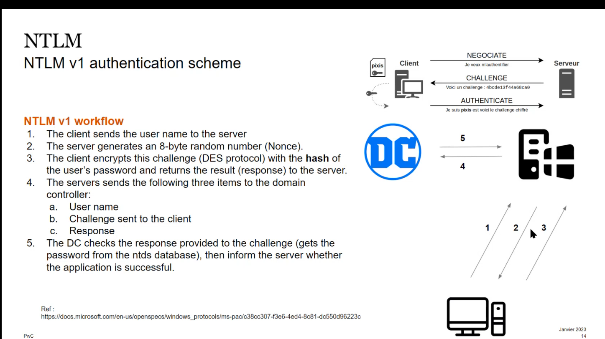
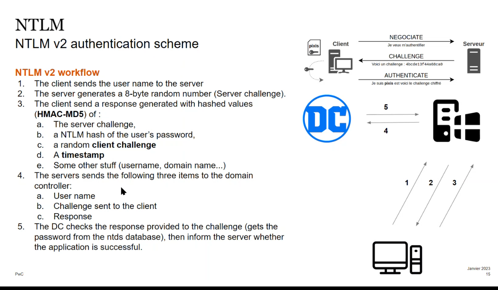

00-AD101
Intro
- annuaire pour gestion d'objets : users,generic users , groups, certificats, comptes machines
- permet auth, authorisation
- gestion de parc (windows) via des gpos (group policy objects)
- ca sert de MDM (gestion de terminal)
- autres fonctionalités : DHCP, DNS , PKI
Machine Names
- fqdn : e.g W10xxx.ad.pwcintenal.com
- Hostname : W10xxxx
- SAM account name : legacy DOMAIN\hostnale
- UPN : user@domain
- DN: distinguished name : format LDAP
- CN=w10xxxx OU=Computer DC=PWC DC=com
Security Principal
- entity that can be authenticated
- SID : unique
SSP
- ca gere l'auth
- sspi c'est des DLLs qui communuie avec SSP
- e.g kerberos SSPI, NTLM SSSPI , Digest security SSPI etc
Domain controller
- windows server
- stocke tous les AD info sous db NTDS.dit + in network SYSVOL
- c:\windows\NTDS\NTDS.dit
- NTDS can be on another drive
- file cznnot be copied u need ntdsutil or VM snapshot or disk backup
- for SYSVOL \\LOGONSERVER\sysvol CAN Cconatin policies ; scripts, etc
- souvent joue le role de Kerbeor DC = respo auth
- certans ont des infos limited : e.g Read only (e.g doesnt contain krbtgt account hash)
- c'est des tier 0 durcissemnt
- limit the number of DC
- first to be patched
- hardned
- no local accounts
- optionnel
- dedicated hardware : mitigate side channel attacks
- no remote control/monitoring agent deployed
- dedicated backup and update systems
- we dont recommed AV deployment or minimal AV
ACLs
- access token is an object contains identiy and user rights (USER SID, group SID, LIST of privs, etc)
- 2 types
- primary: all processes have a primary token (user token associated to the process)
- impersonation token: threads can change their security context if they have the proper rights
- ACL= decis les droits d'un objets : compose de plusierus entrées ACE (SID + acces right allowed or denied)
- ACLs can be misconfigured :bloodhound
GPOS
- permet de faire de la gestion de parc
- appliquer des configs a des users ou computers (suvent plus de machines)
- gpedit.msc : pour changer des politiques
- example : desactiver spooler d'impression, mot de passe complexité , ne pas d'authentifier sur certains postes
- ca peut s'appliquer sur OU
- attaques
- \\DOMAIN\SYSVOL\POLICIES\<SUID_GPO>
- chercher des creds
- LDAP signing not required => MITM and modif of script=> privescv
NTLM v1 vs NTLM v2


e.g diffs NTLM v2 has timestamp to migate relay attacks on non real time
| Weakness (attack) | NTLMv1 | NTLMv2 |
|---|---|---|
| weak crypto (no salt)=> easy to crack hashes | yes | yes but longer |
| offline relay attack (capture traffic and relay from another source | yes | No (timestamp) |
| No mutual auth => online relay attack | yes | yes |
- LM hash is very weak (max and shouldnt be used chars; split into 2 strings, not salted ; not case sensitive)
- however always stored and mostly ignored and souvent LM hash c'est AADXXX (empty)
- if you find them you can try to crack them to have an idea
- NT hash
- also weak no salt
- if 2 NT hashes are similar say one from admin and other user account u can say this is a vuln
- NTLMv1 and NTLMv2 allow pass the hash (only rely on NT hash)
NTLM relay mitigation
- happens on protocol side e.g HTTPS , LDAPs
- for SMB implent smb signing and smbv2 where session signing is enforced
- for ldap , ldaps
- ttp https
- channel bingind : prevent cross-protocl relay
- service
Pass The hash mitigation
- PTH is a function by functioning of NTLM so Disble NTLM (very hard ; many soft dont support it)
- we can do it for TIER 0
- cannot perform netork logon
Service accounts
- specific accounts to secure services and avoid managing servuce accounts
- pass management, (pass roration) , can be used for load valancing etc
- MSA created by default for some stuff like DC$
- GMSA need to be created (more advanced and recommended)
Kerberos
- centralized KDC knows all the secrest
- secrets = long term keys (passwords )
- based on tickets (session keys)
- tickets are public ; sensitive parts are encrypted
- TGT
- ST
- can u do PTH with kerberos
- technically yes : because you have RC4 tickets that contains NT hash
- practically no , becasue it should be flagged since No one is supposed normally to do it
- step 6 : if you enable mutual auth
- PAC validation
- App server ask DC that I received TGS if you are the one who have egenerated it
- can mitigate forging tickets
- recommened on critical services
AS rep roasting
- on kerberos a client gets:
- TGT with Sc,k session key encrypted by DC
- session key Sc,k encrypted by the client Kc
- this causes a problem because no secret is required to permo AS REQ => risk of offlone bruteforce attack
- hence a preauth step by defaukt in AS REQ is needed
- AS REP roastable account have preauth disabled param
- we can offline bruteforce their sectey key
- we dont need valid domain account
Golden Ticket/silver ticket
- the knowledge of secret of krbtgt/DOMAIN enable to forge arbitrary keys unless PAC validation is enabled
- for silver ticket we need service ticket bbut if PAC enabled we need also krbtgt hash
Kerberoating
- if SPN set we can request ST , because a portion is encrypted with pass of service account
- prerequisites : need domain account valid
- ps all computers have default SPN but pass is not crackable
LAPS
- Local admin password solution
- one agent deployed through gpo
- add ACL rights vulnerability : LAPS reader
Delegation
- situation:
- utiliser kerberos AD pour s'authentifier à un service web
- ce service web va chercher des données sur DB server
- vous avez envie que sur cette DB il y ait aussi AD auth et qu'elle soit nominatif avec les personnes qui y accedent
- service SPN a déléguer l'authentification d'un user vers une uatre SPN
Unconstrained delegation
- web SPN has the right to delegate to all SPNs
- object: has the userAccountControl:Tusted_For_Delegation
- si vous compromettez le serveur WEB n'importe quelle personne qui se connecte vers vous vous pouvez l'impersonifizer
- coerce a domain Admin => gets domain admin creds
- ps Protected users can't be delegated (should incelude all tier0 at least)
- tier0 users include domain admins or equivalent (e.g backup operator)
- tier1: servers
- tier2 : endpoints
- A flag set on account that pervent delegation

Constrained delegation
- you specify types of services
Trusts
- connection entre 2 domaines ou 2 forets
- soit directionnele soit bi / Transitive ou non
- types
- forest trusts
- external trusts
- each domain
- en gros vous accepter les tickets qui viennent de l'autre DC
- SID history
- but : faciliter la migration e.g ajouter les users de l'ancien domain
- en essayant d'acceder a une ressource si le SID ou le SID histiory correspond à une ACL alors c'est bon
- un attaquant peut faire du SID spoofing (modifier extraSIDs ) en utilisant des collisions
- SID filtering
- contre SID spoofing
- si user B wants to access ressource in A (A trusts B) , any SID from domain A will be filtered/stripped from PAC
- restrictions
- protections uniquement pour RID<1000 (builtin RIDs): e.g exchange highly privileged users and groups will not be filtered
- si user from B have been granted high privs in A , attacker can still imperonate them
- quelques SIDs sont whitelisted e.g enterprise domain controllers
- Exploit lateralization (domain 1 compromised)
- creer un golden ticket (includes aenterprise admin par defaut)
Recon AD
- si on a pas de compte
- il y a une netree dhcp par defaut qui commence par __ldap contenant DC IP
- scan DC
- enumerer users sur ports kerberos via bruteforce via usernames
- kerbrute
- asreproast
- next password spraying avec custom pass
- Once we have account
- ADIDNS (equivalent to zone transfer)
- bloodhound
- enumerate spns to find services without scanning
- kerberoasting